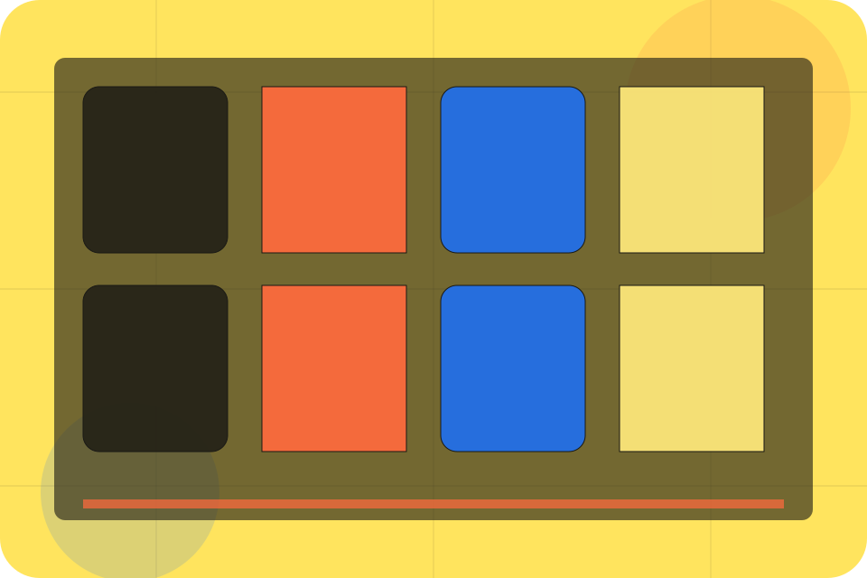
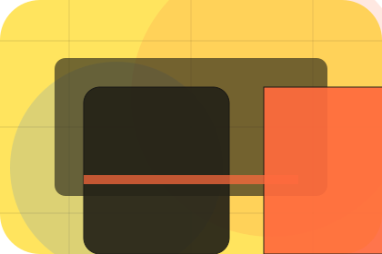
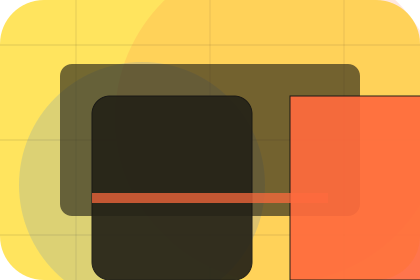
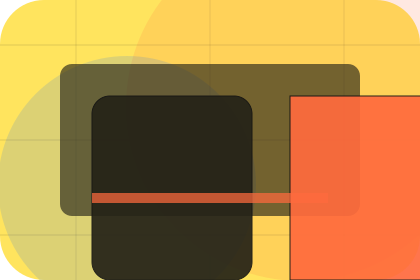
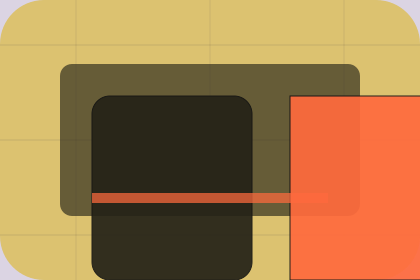

Results / 01
Results by Talent
Results shaped for recruitment, hr & workplace services decisions.
Results opens as a clear recruitment decision hub: what Talent offers, who it helps, why it matters, and which route to take first.
The first screen combines positioning, proof, primary action, and fast internal navigation, so people can act immediately or compare the rest of the results route with context.
Recruitment scopeCompare optionsRequest advice
Yellow job magazine hero
Choose the audience
Select the closest route and Talent keeps the next step, proof, and follow-up expectation aligned with matching confidence for two audiences.

Results / 02
Placements visitors can see
Placements shows what changes after the work: clearer decisions, visible progress, and proof points that connect the offer to real outcomes.
The layout connects before-and-after thinking with measured outcomes, making the result easy to scan without promising what the business cannot guarantee.
Explore ResultsBefore
The uncertainty, delay, or missed opportunity visitors bring into placements.
After
The clearer, safer, or more valuable state Talent is designed to support.
Proof
The visible cue that connects placements to a believable decision, not a loose claim.
Results / 03
Retention visitors can see
Retention shows what changes after the work: clearer decisions, visible progress, and proof points that connect the offer to real outcomes.
The layout connects before-and-after thinking with measured outcomes, making the result easy to scan without promising what the business cannot guarantee.
Explore ResultsBefore
The uncertainty, delay, or missed opportunity visitors bring into retention.
After
The clearer, safer, or more valuable state Talent is designed to support.
Proof
The visible cue that connects retention to a believable decision, not a loose claim.
Results / 04
Speed visitors can see
Speed shows what changes after the work: clearer decisions, visible progress, and proof points that connect the offer to real outcomes.
The layout connects before-and-after thinking with measured outcomes, making the result easy to scan without promising what the business cannot guarantee.
Explore Results
Before
The uncertainty, delay, or missed opportunity visitors bring into speed.
Results / 05
Employers visitors can see
Employers shows what changes after the work: clearer decisions, visible progress, and proof points that connect the offer to real outcomes.
The layout connects before-and-after thinking with measured outcomes, making the result easy to scan without promising what the business cannot guarantee.
Explore ResultsBefore
The uncertainty, delay, or missed opportunity visitors bring into employers.
After
The clearer, safer, or more valuable state Talent is designed to support.

Proof
The visible cue that connects employers to a believable decision, not a loose claim.
Results / 06
Candidates visitors can see
Candidates shows what changes after the work: clearer decisions, visible progress, and proof points that connect the offer to real outcomes.
The layout connects before-and-after thinking with measured outcomes, making the result easy to scan without promising what the business cannot guarantee.
Explore ResultsBefore
The uncertainty, delay, or missed opportunity visitors bring into candidates.
After
The clearer, safer, or more valuable state Talent is designed to support.
Proof
The visible cue that connects candidates to a believable decision, not a loose claim.
Results / 07
Metrics visitors can see
Metrics shows what changes after the work: clearer decisions, visible progress, and proof points that connect the offer to real outcomes.
The layout connects before-and-after thinking with measured outcomes, making the result easy to scan without promising what the business cannot guarantee.
Explore ResultsBefore
The uncertainty, delay, or missed opportunity visitors bring into metrics.
After
The clearer, safer, or more valuable state Talent is designed to support.
Proof
The visible cue that connects metrics to a believable decision, not a loose claim.
Results / 08
Reviews visitors can see
Reviews shows what changes after the work: clearer decisions, visible progress, and proof points that connect the offer to real outcomes.
The layout connects before-and-after thinking with measured outcomes, making the result easy to scan without promising what the business cannot guarantee.
Explore ResultsBefore
The uncertainty, delay, or missed opportunity visitors bring into reviews.
After
The clearer, safer, or more valuable state Talent is designed to support.
Proof
The visible cue that connects reviews to a believable decision, not a loose claim.
Results / 09
Trust visitors can see
Trust shows what changes after the work: clearer decisions, visible progress, and proof points that connect the offer to real outcomes.
The layout connects before-and-after thinking with measured outcomes, making the result easy to scan without promising what the business cannot guarantee.
Explore Results
Before
The uncertainty, delay, or missed opportunity visitors bring into trust.
After
The clearer, safer, or more valuable state Talent is designed to support.
Proof
The visible cue that connects trust to a believable decision, not a loose claim.
Results / 10
Start Hiring
Talent closes the results route with a clear action, a quick reminder of the value, and a low-friction way to start hiring.
Visitors who are ready can use the primary action. Visitors who are still comparing can scan the section links, proof, and support routes before they start hiring.
Start HiringThe final block keeps the choice simple: act now, compare one more proof route, or send enough detail for a focused response.
Start Hiringmatching confidence for two audiences
Start Hiring
A recruitment magazine site with candidate/employer split, bold editorial cards, people proof, and upload routes. Results ends with a direct path to start hiring, plus enough context for visitors who still need to compare.

Start HiringImportant notes before you act
Information is provided for planning and should be reviewed for the final client, location, and operating rules.